This directory contains samples related to the Rogue Wave Views Gadgets package.
| Pick a CSS stylesheet | |
| 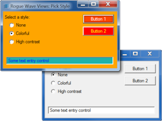 | This sample shows how to select and apply a CSS style sheet to a Gadget Container. |
| Rogue Wave Views Gadgets Customizing Gadgets Tutorial Step 2 | |
| 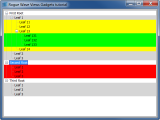 | This sample corresponds to the step 2 of the tutorial Customizing Gadgets. |
| Rogue Wave Views Code Editor Sample | |
| 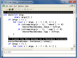 | This sample shows how to create a file edition application for source code. |
| Rogue Wave Views Gadgets Dockable Sample | |
| 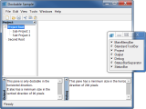 | This sample shows how to create a basic application using the dockable windows. It also shows how to save and restore a docking configuration. |
| Rogue Wave Views Gadgets Drag-and-Drop Features | |
| 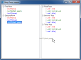 | This sample shows how to use the drag-and-drop feature of the IlvGadgetItem class between two instances of the IlvTreeGadget class. |
| Rogue Wave Views Gadgets Generic Inspector | |
| 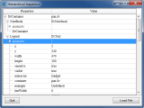 | This sample shows how to implement a small generic inspector using the IlvHierarchicalSheet class. |
| Rogue Wave Views Gadgets Look and Feel Sample | |
| 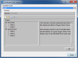 | This sample shows how to create a new look and feel handler, and how to use it in an application. |
| Rogue Wave Views Gadgets ILV Files Viewer | |
| 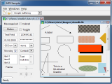 | This sample shows how to implement a multiframe application using the IlvViewFrame and IlvDesktopManager classes. |
| Rogue Wave Views Guitar Chord picker Sample | |
| 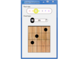 | This sample shows how to create new gadget that lets the user select a value among several values displayed in a horizontal bar with rounded corners. |
| Rogue Wave Views Gadgets Matrix Sample 1 | |
| 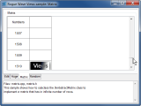 | This sample shows how to subclass the IlvAbstractMatrix class to implement a matrix that has in infinite number of rows. |
| Rogue Wave Views Gadgets Matrix Sample 2 | |
| 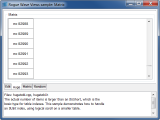 | This sample shows how to scroll in a large number of data items. |
| Rogue Wave Views Gadgets Matrix Sample 3 | |
| 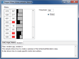 | This sample displays an animated IlvAbstractMatrix of 1000 rows and 3 columns. |
| Rogue Wave Views Gadgets Matrix Sample 4 | |
| 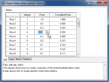 | This sample shows how to create a
subclass of the IlvAbstractMatrixItem class. It
also shows how to create specific matrix item editors. |
| Rogue Wave Views Gadgets Transparent Sample | |
| 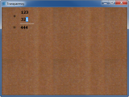 | This sample shows how to use the transparent feature of the IlvGadget class. The background set on the view can be seen through the gadgets. |
| Rogue Wave Views Gadgets Viewfile Tutorial Step 4 | |
| 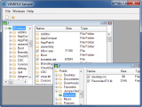 | This sample corresponds to the step 4 of the tutorial VIEWFILE. |
{kind=link}
{kind=link}
{kind=link}
{kind=link}
{kind=link}
{kind=link}
{kind=link}
{kind=link}
{kind=link}
{kind=link}
{kind=link}
{kind=link}
{kind=link}
{kind=link}
{kind=link}